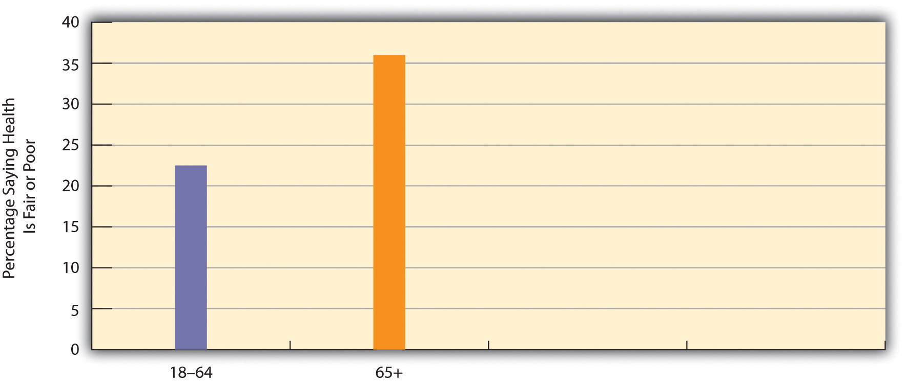
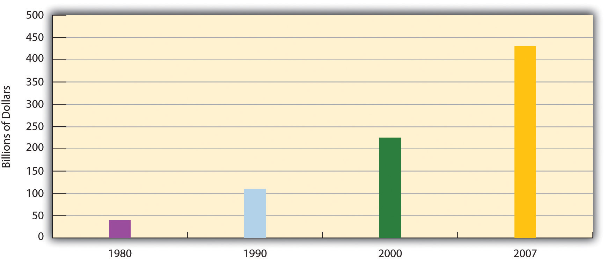

“Wisdom of the Elders,” the headline said. The story was about older Americans who have used insights gained from their many years of experience to accomplish great things. John Ammon, 66, founded and runs an after-school tutoring and mentoring center for Native American children in San Jose, California. “We don’t twist their arms,” he says. “The kids know we want them to do well.” Natalie Casey, 82, is a nurse in Pittsburgh, Pennsylvania, who is very patient-oriented. “I found out that if I took a genuine interest in my patients, it took their minds off what they were in the hospital for,” she told a reporter. “Nursing isn’t just delivering medicine and changing bandages. If you listen to somebody, it’s surprising how much their outlook can change.”
John Freutel, 56, assistant fire chief in Minneapolis, Minnesota, helped coordinate rescue operations when a busy bridge collapsed over the Mississippi River in August 2007. He almost certainly saved several lives. “There isn’t a manual on how to deal with a bridge collapse,” Freutel recalled. “I was juggling 10 million things, but 30 years of experience helped me stay calm. When you’re in command, I’ve learned, the most important lesson is: take a deep breath.”
And in an interview with CBS News anchor Katie Couric, Chesley “Sully” Sullenberger III, 58, remembered the day, January 15, 2009, when he saved more than 150 lives by piloting a US Air jet safely on emergency landing into the Hudson River. “One way of looking at this might be that, for 42 years, I’ve been making small, regular deposits in this bank of experience: education and training,” he said. “And on January 15 the balance was sufficient so that I could make a very large withdrawal.” (Newcott, 2009)Newcott, B. (2009, May and June). Wisdom of the elders. AARP The Magazine. Retrieved from http://www.aarpmagazine.org/people/wisdom_of_the_elders.html
As this news story makes so clear, older individuals have much to contribute to our society in many ways. Yet our society does not value them nearly as much as some other societies value their elders. At the same time, as these societies have changed, so have their views of their older members changed to some degree.
Consider the San (also known as the !Kung Bushmen, now considered a derogatory term), a hunting-and-gathering tribe in the Kalahari Desert in southern Africa. Although their land has been taken from them and most now are forced to live on farms and ranches, they struggle to maintain their traditional values even as they must abandon their hunting-and-gathering ways.
One of these values is respect for people in their old age. Old here is a relative term, as most San die before they reach 60. Although the San live a healthy lifestyle, they lack modern medicine and fall prey to various diseases that industrial nations have largely conquered. Only about 20% of the San live past 60, and those who do are revered because of the wisdom they have acquired over the years: they know the history of the San, they know various San quite well, and they know how and where to find food regardless of the weather (Schneider & Silverman, 2010; Thomas, 2006).Schneider, L., & Silverman, A. (2010). Global sociology: Introducing five contemporary societies (5th ed.). New York, NY: McGraw-Hill; Thomas, E. M. (2006). The old way: A story of the first people (Rev. ed.). New York, NY: Farrar, Straus and Giroux.
As the San have been forced to change from hunting and gathering to farming and herding, many aspects of their culture and social structure have changed as well (Yellen, 1990).Yellen, J. E. (1990, April). The transformation of the Kalahari !Kung. Scientific American, 96–105. Inequality has increased, and selfishness has slowly replaced their emphasis on sharing. Elderly San have lost status and respect, perhaps because the knowledge they possess of the old ways is no longer needed as these ways fade away.
The San society is very different from the United States and other industrial societies, yet it has much to tell us about the social process of aging and about the cultural and structural forces affecting older people. When the San were still hunters and gatherers, their elderly were respected and enjoyed living with their relatives. At the same time, some became a burden on their kin, and especially on people with whom they had to live if their own children had already died. After the San were forced to relocate, changes that affected their culture and social structure began affecting their elderly as well. If knowing about a society’s culture and structure helps us to understand its elderly, it is also true that knowing about a society’s elderly helps us understand the society itself, as this chapter will illustrate.
The United States is far removed from the world of the San, but changes that have been occurring in this nation are also affecting its older citizens. For example, the numbers of older Americans are growing rapidly, with important repercussions for economic and social life. Somewhat like the San, we appreciate our elderly but also consider them something of a burden. We also hold some unfortunate stereotypes of them and seemingly view old age as something to be shunned. Television commercials and other advertisements extol the virtues of staying young by “washing away the gray” and by removing all facial wrinkles. In our youth-obsessed culture, older people seem to be second-class citizens.
Why study the elderly and the process of growing old? As just noted, understanding the elderly and the experience of aging will help us understand a society. An additional reason might be even more convincing: you will be old someday. At least you will be old if you do not die prematurely from an accident, cancer, a heart attack, some other medical problem, murder, or suicide. Although we do not often think about aging when we are in our late teens and early 20s, one of our major goals in life is to become old. That is partly why many people wear seat belts, watch their diets, and exercise. By studying age and aging and becoming familiar with some of the problems facing the elderly now and in the future, we are really studying something about ourselves and a stage in the life course we all hope to reach.
The study of aging is so important and popular that it has its own name, gerontologyThe study of aging.. Social gerontology is the study of the social aspects of aging (Hooyman & Kiyak, 2011).Hooyman, N. R., & Kiyak, H. A. (2011). Social gerontology: A multidisciplinary perspective (9th ed.). Upper Saddle River, NJ: Pearson.The scholars who study aging are called gerontologists. The people they study go by several names, most commonly “older people,” “elders,” and “the elderly.” The latter term is usually reserved for those 65 or older, while “older people” and “elders” (as the headline of the opening news story illustrates) often include people in their 50s as well as those 60 or older.
Gerontologists say that age and aging have at least four dimensions. The dimension most of us think of is chronological ageThe number of years since we were born., defined as the number of years since someone was born. A second dimension is biological agingThe physical changes that “slow us down” as we get into our middle and older years., which refers to the physical changes that “slow us down” as we get into our middle and older years. For example, our arteries might clog up, or problems with our lungs might make it more difficult for us to breathe. A third dimension, psychological agingThe psychological changes, including those involving mental functioning and personality, that occur as we age., refers to the psychological changes, including those involving mental functioning and personality, that occur as we age. Gerontologists emphasize that chronological age is not always the same thing as biological or psychological age. Some people who are 65, for example, can look and act much younger than some who are 50.
The fourth dimension of aging is social. Social agingThe changes in roles and relationships that occur as people age. refers to changes in a person’s roles and relationships, both within their networks of relatives and friends and in formal organizations such as the workplace and houses of worship. Although social aging can differ from one individual to another, it is also profoundly influenced by the perception of aging that is part of a society’s culture. If a society views aging positively, the social aging experienced by individuals in that society will be more positive and enjoyable than in a society that views aging negatively. Let’s look at the perception of aging in more detail.
The perception of aging can vary from one society to another, and it can also change over time within any given society. Gerontologists have investigated these cross-cultural and historical differences. By understanding aging in other societies and also in our past, they say, we can better understand aging in our own society. To acquaint you with “other ways of growing old” (Amoss & Harrell, 1981),Amoss, P. T., & Harrell, S. (Eds.). (1981). Other ways of growing old: Anthropological perspectives. Stanford, CA: Stanford University Press. we discuss briefly some of the cross-cultural and historical evidence on the perception and experience of aging.
Gerontologists think that few people reached the age of 35 in the prehistoric societies that existed thousands of years ago. Those who did were considered “old” and treated as such. It is obviously difficult to know much about aging back then, and much of what we think we know is based on our knowledge about the preindustrial societies that anthropologists have been studying for many decades (Sokolovsky, 2009).Sokolovsky, J. (Ed.). (2009). The cultural context of aging: Worldwide perspectives. Westport, CT: Praeger.
In such societies, older people are often respected, as in the San, for their knowledge and wisdom. But the extent of this respect, and whether a society scorns its elderly instead, depends on at least two factors. The first is the health and mental abilities of older people. Generally speaking, elders in good health are viewed with respect, while those in poor health are viewed with disdain. In this regard, many societies distinguish between the “young-old” and the “old-old.” Usually in good health, the young-old are respected and sometimes even venerated as priests because they are thought to hold special insight into the world awaiting after death. In contrast, the old-old, who are often in bad health, are viewed more as a burden because of their physical frailties. Sometimes they are abused, left to die, killed via ritualistic sacrifice, or expected to kill themselves (Barker, 2009).Barker, J. C. (2009). Between humans and hosts: The decrepit elderly in a Polynesian society. In J. Sokolovsky (Ed.), The cultural context of aging. Westport, CT: Praeger.
A second factor affecting how the elderly are viewed is a society’s economy. When older people are wealthy (which, depending on the society, might mean they own land, livestock, or real estate or have much money), they have more social influence among their kin and other members of a society. The stronger a society’s economy, the more resources people can acquire by the time they reach old age and the greater their power and status in that time of life. Conversely, the weaker a society’s economy, the fewer resources people can acquire by old age and the lower their power and status as they age.
If a society’s economy makes a difference, then changes in the economy can affect how the elderly are viewed and treated. All other things equal, an improving economy should enhance respect for the elderly and improve how they are treated. Conversely, a worsening economy should decrease respect for the elderly and worsen their treatment.
Other sorts of changes in a society can also affect how the elderly are viewed. We saw earlier that the status of the San elderly declined after they had to move from their natural habitat to farms and ranches. The elderly in other preindustrial societies have also had their status change as their land has been taken from them and as modern ways have impinged on their traditional habits. In such situations, their knowledge is less useful and important than before. If “knowledge is power,” as the saying goes, the decline in the importance of their knowledge has led to a decline in their status (Hooyman & Kiyak, 2011).Hooyman, N. R., & Kiyak, H. A. (2011). Social gerontology: A multidisciplinary perspective (9th ed.). Upper Saddle River, NJ: Pearson.
The elderly in traditional societies do not always pay a price for modernization. In many societies, the respect for the elderly has been strong enough to resist modernization. In others, people have fought to retain their old ways and, in doing so, have looked to their elders for guidance and knowledge.
The ancient civilizations in Greece and Rome left art and writings that provide a good portrait of their experience and perception of aging (Thane, 2005; Minois, 1989).Thane, P. (Ed.). (2005). A history of old age. Los Angeles, CA: J. Paul Getty Museum; Minois, G. (1989). History of old age: From antiquity to the renaissance. Chicago, IL: University of Chicago Press. Few people back then reached what we would now call old age, as 80% died before what we would consider the middle age. That said, the older citizens of ancient Greece and Rome were highly respected for their wisdom, and councils of elders helped rule Greek and Roman society.
However, respect for the elderly in Greece declined during the fifth century B.C., as old age came to be depicted as a period of declining mental and physical ability and youth extolled as the ideal time of life. Reflecting this new view, Greek mythology from that time painted a negative portrait of the elderly and contrasted the youthfulness of the gods with the frailties of aging humans. In one myth Eos, the goddess of dawn, fell in love with a human named Tithonus. When he became old and weak, she left him and turned him into a grasshopper! This change in the view of the elderly was reversed about two centuries later, when old age in ancient Greece reacquired its respect and influence, and ancient Rome followed suit (Hooyman & Kiyak, 2011).Hooyman, N. R., & Kiyak, H. A. (2011). Social gerontology: A multidisciplinary perspective (9th ed.). Upper Saddle River, NJ: Pearson.
During the Middle Ages, many people died from the plague and other diseases, and few reached what we would now consider to be old age. Because so many people died and food was so scarce, the elderly were considered a burden and held in disrespect. When the Renaissance began, artists and writers drew on classical Greece for much of their inspiration and continued to depict old age negatively.
Their negative view had turned around by the American colonial period, as the Puritans thought that old age was a gift from God and gave their elderly (especially men) much respect and power (Cole, 1992).Cole, T. R. (1992). The journey of life: A cultural history of aging in America. New York, NY: Cambridge University Press. The fact that older Puritans owned a lot of land in an agricultural society reinforced their power. During the 19th century, however, land-owning by older Americans became less important as the United States shifted from an agricultural to an industrial economy. Regard for the elderly’s authority weakened, and power transferred to younger men who were making large sums of money in the industrial world. As factory work became the dominant mode of production, older people were further seen as less and less useful. They could not keep up with younger workers in the factories and became seen as less useful to the needs of a manufacturing economy.
As the “information technology” revolution has taken hold since the 1980s, older people have again largely been left out of a fundamental economic shift. The people at the center of the information age have been in their 20s or 30s, not in their 60s and 70s. The impact of the information age on the status of older people will be an important topic for investigation in the years ahead.
Recall that social aging refers to changes in people’s roles and relationships in a society as they age. We have seen that social aging and views of the aging process both differ cross-culturally and over time. A few decades ago, social gerontologists began to explain how and why the aging process in the United States and other societies occurs. These explanations, summarized in Table 12.1 "Theory Snapshot", have their merits and shortcomings, but together they help us understand patterns of social aging. They fall roughly into either the functionalist, social interactionist, or conflict approaches discussed in Chapter 1 "Sociology and the Sociological Perspective".
Table 12.1 Theory Snapshot
| Theoretical perspective | Major assumptions |
|---|---|
| Disengagement theory | To enable younger people to assume important roles, a society must encourage its older people to disengage from their previous roles and to take on roles more appropriate to their physical and mental decline. This theory is considered a functionalist explanation of the aging process. |
| Activity theory | Older people benefit themselves and their society if they continue to be active. Their positive perceptions of the aging process are crucial for their ability to remain active. This theory is considered an interactionist explanation of the aging process. |
| Conflict theory | Older people experience age-based prejudice and discrimination. Inequalities among the aged exist along the lines of gender, race/ethnicity, and social class. This theory falls into the more general conflict theory of society. |
One of the first explanations was called disengagement theoryThe view, now largely abandoned, by some past social gerontologists that a society needs to encourage its elderly to disengage from their previous roles and to take on roles more appropriate to their declining physical and mental abilities. (Cumming & Henry, 1961).Cumming, E., & Henry, W. E. (1961). Growing old: The process of disengagement. New York, NY: Basic Books. This approach assumed that all societies must find ways for older people’s authority to give way to younger people. A society thus encourages its elderly to disengage from their previous roles and to take on roles more appropriate to their physical and mental decline. In this way, a society effects a smooth transition of its elderly into a new, more sedentary lifestyle and ensures that their previous roles will be undertaken by a younger generation that is presumably more able to carry out these roles. Because disengagement theory assumes that social aging preserves a society’s stability and that a society needs to ensure that disengagement occurs, it is often considered a functionalist explanation of the aging process.
A critical problem with this theory was that it assumed that older people are no longer capable of adequately performing their previous roles. As we have seen, however, older people in many societies continue to perform their previous roles quite well. In fact, society may suffer if its elderly do disengage, as it loses their insight and wisdom. It is also true that many elders cannot afford to disengage from their previous roles: if they leave their jobs, they are also leaving needed sources of income, and if they leave their jobs and other roles, they also reduce their social interaction and the benefits it brings (Hochschild, 1975).Hochschild, A. (1975). Disengagement theory: A critique and proposal. American Sociological Review, 40, 553–569.
Today most social gerontologists prefer activity theoryThe view by social gerontologists that older people will benefit both themselves and their society if they remain active and try to continue to perform the roles they had before they aged., which assumes that older people benefit both themselves and their society if they remain active and try to continue to perform the roles they had before they aged (Joung & Miller, 2007).Joung, H.-M., & Miller, N. J. (2007). Examining the effects of fashion activities on life satisfaction of older females: Activity theory revisited. Family and Consumer Sciences Research Journal, 35(4), 338–356. As they perform their roles, their perception of the situations they are in is crucial to their perception of their aging and thus to their self-esteem and other aspects of their psychological well-being. Because activity theory focuses on the individual and her/his perception of the aging process, it is often considered a social interactionist explanation of social aging.
One criticism of activity theory is that its appraisal of the ability of the elderly to maintain their level of activity is too optimistic: although some elders can remain active, others cannot. Another criticism is that activity theory is too much of an individualistic approach, as it overlooks the barriers many societies place to successful aging. Some elders are less able to remain active because of their poverty, gender, and social class, as these and other structural conditions may adversely affect their physical and mental health. Activity theory overlooks these conditions.
Explanations of aging grounded in conflict theory put these conditions at the forefront of their analyses. A conflict theoryThe view by social gerontologists that ageism and structural obstacles pose several problems for the elderly and prevent them from realizing their potential and for achieving the best physical and mental health possible. of aging, then, emphasizes the impact of ageismNegative views about, and prejudice and discrimination toward, various age groups, especially the elderly., or negative views about old age and prejudice and discrimination against the elderly (Hooyman & Kiyak, 2011).Hooyman, N. R., & Kiyak, H. A. (2011). Social gerontology: A multidisciplinary perspective (9th ed.). Upper Saddle River, NJ: Pearson. According to this view, older workers are devalued because they are no longer economically productive and because their higher salaries (because of their job seniority), health benefits, and other costs drive down capitalist profits. Conflict theory also emphasizes inequality among the aged along gender, race/ethnicity, and social class lines. Reflecting these inequalities in the larger society, some elders are quite wealthy, but others are very poor.
One criticism of conflict theory is that it blames ageism on modern, capitalist economies. As we have seen, negative views of the elderly also exist in preindustrial societies, even if the views there overall are often more positive than in their modern counterparts.
When we look historically and cross-culturally, we see that old age is a relative term, since few people in many of the societies we have discussed reach what most Americans would consider to be old, say 65 or older (or perhaps 50 or older, which entitles someone to membership in AARP, formerly called the American Association of Retired Persons). When we compare societies, we find that life expectancyThe average age to which people can be expected to live., or the average age to which people can be expected to live, varies dramatically across the world. As Figure 12.1 "Average Life Expectancy Across the Globe (Years)" illustrates, life expectancy in North America, most of Europe, and Australia averages almost 75 years or more, while life expectancy in most of Africa, where the San live, averages less than 55 years. In some African nations, the average life expectancy is under 45 years (Population Reference Bureau, 2009).Population Reference Bureau. (2009). 2009 world population data sheet. Washington, DC: Author.
Figure 12.1 Average Life Expectancy Across the Globe (Years)

Source: Adapted from Global Education Project. (2004). Human conditions: World life expectancy map. Retrieved from http://www.theglobaleducationproject.org/earth/human-conditions.php.
What accounts for these large disparities? The major factor is the wealth or poverty of a nation, as the wealthiest nations have much longer life expectancies than the poorest ones. This is true because, as Chapter 6 "Groups and Organizations" noted, the poorest or least developed nations by definition have little money and few other resources. They suffer from hunger, AIDS, and other diseases, and they lack indoor plumbing and other modern conveniences found in almost every home in the wealthiest nations. As a result, they have high rates of infant and childhood mortality, and many people who make it past childhood die prematurely from disease, starvation, and other problems. We return to these problems in Chapter 13 "Work and the Economy".
These differences mean that few people in these societies reach the age of 65 that Western nations commonly mark as the beginning of old age. Figure 12.2 "Percentage of Population Aged 65 or Older, 2007" depicts the percentage of each nation’s population that is 65 or older. Not surprisingly, the nations of Africa have very low numbers of people 65 or older. In Uganda, for example, only 3% of the population is at least 65, compared to 13% of Americans and 20% of Germans and Italians.
Figure 12.2 Percentage of Population Aged 65 or Older, 2007
Source: Adapted from Population Reference Bureau. (2007). 2007 world population data sheet. Retrieved from http://www.prb.org/pdf07/07WPDS_Eng.pdf.
Despite the international disparities we see in life expectancy, overall it has been increasing steadily around the world. It was only 46 years worldwide in the early 1950s but was 69 in 2009 and is expected to reach about 75 by 2050 (Population Reference Bureau, 2009; United Nations Population Division, 2009).Population Reference Bureau. (2009). 2009 world population data sheet. Washington, DC: Author; United Nations Population Division. (2009). World population prospects: The 2008 revision. New York, NY: Author. This means that the number of people 65 or older is growing rapidly: they are expected to reach almost 1.5 billion worldwide by 2050, three times their number today and five times their number just 20 years ago (United Nations Population Division, 2009).United Nations Population Division. (2009). World population prospects: The 2008 revision. New York, NY: Author. Despite international differences in life expectancy and the elderly percentage of the population, the world as a whole is decidedly “graying,” with important implications for the cost and quality of elder care and other issues (Hayutin, 2007).Hayutin, A. M. (2007). Graying of the global population. Public Policy & Aging Report, 17(4), 12–17.
In wealthy nations, older people (65 or older) now constitute 15% of the population but will account for 26% by 2050. Because so many people die so young, poor nations historically have had very low percentages of older people, but this percentage is expected to increase from about 6% now to 15% in 2050. Two factors will account for this growth. First, as in wealthy nations, life expectancy is increasing due to better health care and diets along with other factors, even if conditions in poor nations continue otherwise to be miserable overall. Second, poor nations are experiencing declining fertility; because fewer births means that a lower percentage of their populations will be young, a larger percentage of their populations will be older.
By 2050, the percentage of older people in poor nations will equal the percentage of older people in rich nations today. The graying of their populations promises to pose special problems. As Adele M. Hayutin (2007, p. 13)Hayutin, A. M. (2007). Graying of the global population. Public Policy & Aging Report, 17(4), 12–17. observes, “The rapid pace of aging in the less developed countries will require them to adjust much faster than has been necessary in more developed countries. Moreover, the sheer size of their populations will make their adjustments even more challenging.”
A major problem will obviously involve paying for the increase in health care that the increase of older people in these nations will require. Because these nations are so poor, they will face even greater problems than the industrial world in paying for such care and for other programs and services their older citizens will need. Another problem stems from the fact that many poor nations are beginning or continuing to industrialize and urbanize. As they do so, traditional family patterns, including respect for the elderly and the continuation of their roles and influence, may weaken. One reason for this is that urban families have smaller dwelling units in which to accommodate their elderly relatives and lack any land onto which they can build new housing. As a result, families in poor nations will find it increasingly difficult to accommodate their elders. Moreover, elders in poor nations have not had a chance to acquire the financial assets enjoyed by many of their counterparts in the industrial world, making them more dependent on their children and grandchildren than the industrial world’s elderly. Yet in sort of a Catch-22, their children and grandchildren typically have few assets of their own and thus have trouble affording to care for their elders.
Life expectancy has been increasing in the United States along with the rest of the world (see Figure 12.3 "Changes in U.S. Life Expectancy at Birth, 1900–2010"). It rose rapidly in the first half of the 20th century and has increased steadily since then. From a low of 47.3 years in 1900, it rose to about 71 years in 1970 and 77 years in 2000 and will rise to a projected 78.3 years in 2010. Americans born in 2010 will thus be expected to live about 31 years longer (a gain of almost 66%) than those born 110 years earlier.
Figure 12.3 Changes in U.S. Life Expectancy at Birth, 1900–2010
Sources: Data from Arias, E. (2010). United States life tables, 2006. National Vital Statistics Reports, 58(21), 1–40.
Note that the average U.S. life expectancy in 1900 was similar to that seen today in many poor nations. A century ago, many Americans lacked proper sanitation and good nutrition and lived before the advent of modern medicine, when many deadly diseases were rampant. Many infants died before age 1 and many children died before age 10, lowering overall life expectancy. Improved public sanitation and the development of new drugs such as antibiotics helped greatly to reduce infant and childhood mortality in the first half of the 20th century and, in turn, to increase life expectancy (Haines, 2008).Haines, M. (2008). Fertility and mortality in the United States. In R. Whaples (Ed.), Eh.Net encyclopedia. Retrieved from http://eh.net/encyclopedia/article/haines.demography Declining death rates among the elderly also help account for the increase in life expectancy shown in Figure 12.3 "Changes in U.S. Life Expectancy at Birth, 1900–2010". In 1900, a 65-year-old person could expect to live another 11.9 years; the comparable figure for a 65-year-old now is almost 19 years, an increase of almost 7 years.
During the next few decades, the numbers of the elderly will increase rapidly thanks to the large baby boom generation born after World War II (from 1946 to 1964) that is now entering its mid-60s. Figure 12.4 "Past and Projected Percentage of U.S. Population Aged 65 or Older, 1900–2050" shows the rapid rise of older Americans (65 or older) as a percentage of the population that is expected to occur. Elders numbered about 3.1 million in 1900 (4.1% of the population), number about 40 million today, and are expected to reach 89 million by 2050 (20.2% of the population). The large increase in older Americans overall has been called the graying of America and will have important repercussions for elderly care and other aspects of old age in the United States, as we discuss later.
Figure 12.4 Past and Projected Percentage of U.S. Population Aged 65 or Older, 1900–2050
Source: Data from Administration on Aging. (n.d.). Projected future growth of the older population by age: 1900–2050. Retrieved from http://www.aoa.gov/AoARoot/Aging_Statistics/future_growth/docs/By_Age_65_and_over.xls.
We have seen that worldwide differences in life expectancy reflect global stratification. Inequality in life expectancy also exists within a given society along gender, race/ethnicity, and social class lines.
For gender the inequality is in favor of women, who for both biological and social reasons (see Chapter 13 "Work and the Economy") outlive men across the globe. In the United States, for example, girls born in 2005 could expect to live 80.4 years on the average, but boys only 75.2 years.
In most countries, race and ethnicity combine with social class to produce longer life expectancies for the (wealthier) dominant race, which in the Western world is almost always white. The United States again reflects this international phenomenon: whites born in 2005 could expect to live 78.3 years on the average, but African Americans only 73.2 years. In fact, gender and race combine in the United States to put African American males at a particular disadvantage, as they can expect to live only 69.5 years (see Figure 12.5 "Sex, Race, and Life Expectancy for U.S. Residents Born in 2005"). The average African American male will die about 11.3 years earlier than the average white woman.
Figure 12.5 Sex, Race, and Life Expectancy for U.S. Residents Born in 2005
Source: Data from National Center for Health Statistics, U.S. Department of Health and Human Services. (2008). Health, United States, 2008, with special feature on the health of young adults. Retrieved from the Centers for Disease Control and Prevention Web site: http://www.cdc.gov/nchs/data/hus/hus08.pdf#026.
Our society, like many of the others discussed earlier, has a mixed view of aging and older people. While we generally appreciate our elderly, we have a culture oriented toward youth, as evidenced by the abundance of television characters in their 20s and lack of those in their older years. As individuals, we do our best not to look old, as the many ads for wrinkle creams and products to darken gray hair attest. Moreover, when we think of the elderly, negative images often come to mind. We often think of someone who has been slowed by age both physically and mentally. She or he may have trouble walking up steps, picking up heavy grocery bags, standing up straight, or remembering recent events. The term senile often comes to mind, and phrases like “doddering old fool,” “geezer,” and other disparaging remarks sprinkle our language when we talk about them. Meanwhile, despite some improvement, the elderly are often portrayed in stereotypical ways on television and in movies (Lee, Carpenter, & Meyers, 2007).Lee, M. M., Carpenter, B., & Meyers, L. S. (2007). Representations of older adults in television advertisements. Journal of Aging Studies, 21(1), 23–30.
How true is this negative image? What do we know of physical and psychological changes among the elderly? How much of what we think we know about aging and the elderly is a myth, and how much is reality? Gerontologists have paid special attention to answering these questions (Craik & Salthouse, 2008; Binstock & George, 2006).Craik, F. I. M., & Salthouse, T. A. (Eds.). (2008). Handbook of aging and cognition. New York, NY: Psychology Press; Binstock, R. H., & George, L. K. (Eds.). (2006). Handbook of aging and the social sciences (6th ed.). Boston, MA: Academic Press.
Biological changes certainly occur as we age. The first signs are probably in our appearance. Our hair begins to turn gray, our (male) hairlines recede, and a few wrinkles set in. The internal changes that often accompany aging are more consequential, among them being that (a) fat replaces lean body mass, and many people gain weight; (b) bone and muscle loss occurs; (c) lungs lose their ability to take in air, and our respiratory efficiency declines; (d) the functions of the cardiovascular and renal (kidney) systems decline; (e) the number of brain cells declines, as does brain mass overall; and (f) vision and hearing decline (Hooyman & Kiyak, 2011).Hooyman, N. R., & Kiyak, H. A. (2011). Social gerontology: A multidisciplinary perspective (9th ed.). Upper Saddle River, NJ: Pearson. Cognitive and psychological changes also occur. Learning and memory begin declining after people reach their 70s; depression and other mental/emotional disorders can set in; and dementia, including Alzheimer’s disease, can occur. All of these conditions yield statistics such as follows: about half of people 65 or older have arthritis or high blood pressure; almost one-fifth have coronary heart disease; more than one-fifth have diabetes; and about 60% of women in their 70s have osteoporosis (Centers for Disease Control and Prevention & The Merck Company Foundation, 2007).Centers for Disease Control and Prevention & The Merck Company Foundation. (2007). The state of aging and health in America 2007. Whitehouse Station, NJ: The Merck Company Foundation.
Still, the nature and extent of all of these changes vary widely among older people (Sawchuk, 2009).Sawchuk, D. (2009). The raging grannies: Defying stereotypes and embracing aging through activism. Journal of Women & Aging, 21(3), 171–185. doi:10.1080/08952840903054898 Some individuals are frail at 65, while others remain vigorous well into their 70s and beyond. People can be “old” at 60 or even 50, while others can be “young” at 80. Many elders are no longer able to work, but others remain in the labor force. All in all, then, most older people do not fit the doddering image myth and can still live a satisfying and productive life.
To what extent are the effects of biological and psychological aging the inevitable results of chronological aging? Gerontologists are still trying to understand what causes these effects, and their explanations center on such things as a declining immune system, the slowing of cellular replication, and other processes that need not concern us here.
Some recent research has focused on centenarians—people at least 100 years of age—to try to find out what enables them to live so long. There are about 85,000 centenarians in the United States, and this number is expected to reach 580,000 by 2040 (Mozes, 2008).Mozes, A. (2008, October 13). Centenarians offer long-life secrets. U.S. News & World Report. Retrieved from http://health.usnews.com/articles/health/healthday/2008/2008/2001/centenarians-offer-long-life-secrets.html They tend to be as healthy as people in their early 80s, and their medical expenses are lower. Some eat red meat and some are vegetarians, and some exercise a lot while others exercise little. Scientists think they may have “supergenes” that protect them from cancer or Alzheimer’s disease and are trying to find these genes. The relative health of the centenarians led one researcher to observe, “Now that we know that a substantial number of people can remain robust and healthy through their 90s, at least, that should change our attitude about old age. It is no longer a curse, but an opportunity” (Hilts, 1999, p. D7).Hilts, P. J. (1999, June 1). Life at age 100 is surprisingly healthy, The New York Times, p. D7.
We do not all have supergenes and we will not all become centenarians, but research shows we can still take several steps to help us age better, because what we do as we enter our older years matters much more than genetics (Centers for Disease Control and Prevention & The Merck Company Foundation, 2007).Centers for Disease Control and Prevention & The Merck Company Foundation. (2007). The state of aging and health in America 2007. Whitehouse Station, NJ: The Merck Company Foundation. To the extent this is true, the effects of biological and psychological aging are not necessarily inevitable, and “successful aging” is possible (Evans, 2009).Evans, R. J. (2009). A comparison of rural and urban older adults in Iowa on specific markers of successful aging. Journal of Gerontological Social Work, 52(4), 423–438. The steps highlighted in the gerontological literature are by now almost a cliché, but regular exercise, good nutrition, and stress reduction stand at the top of most gerontologists’ recommendations for continued vitality in later life. In fact, Americans live about 10 years less than an average set of genes should let them live because they do not exercise enough and because they eat inadequate diets (Perls & Silver, 1999).Perls, T. T., & Silver, M. H. (1999). Living to 100: Lessons in living to your maximum potential at any age. New York, NY: Basic Books.
Research by social gerontologists suggests at least two additional steps older people can take if they want “successful aging.” The first is involvement in informal, personal networks of friends, neighbors, and relatives. The importance of such networks is one of the most thoroughly documented in the social gerontological literature (Binstock & George, 2006; Adams & Blieszner, 1995)Binstock, R. H., & George, L. K. (Eds.). (2006). Handbook of aging and the social sciences (6th ed.). Boston: Academic Press; Adams, R. G., & Blieszner, R. (1995). Aging well with family and friends. American Behavioral Scientist, 39, 209–224. (see the “Sociology Making a Difference” box). Networks enhance successful aging for at least two reasons. First, they provide practical support, such as help buying groceries and visiting the doctor, to the elderly who need it. Second, they help older people maintain their self-esteem, meet their desire for friendships, and satisfy other emotional needs and thereby enhance their psychological well-being.
A second step for successful aging suggested by scholarly research is religious involvement (Barkan & Greenwood, 2003; Moberg, 2008).Barkan, S. E., & Greenwood, S. F. (2003). Religious attendance and subjective well-being among older Americans: Evidence from the General Social Survey. Review of Religious Research, 45(2), 116–129; Moberg, D. O. (2008). Spirituality and aging: Research and implications. Journal of Religion, Spirituality & Aging, 20(1–2), 95–134. Religious involvement enhances psychological well-being among older adults for at least two reasons. As people worship in a congregation, they interact with other congregants and, as just noted, enhance their social support networks. Moreover, as they practice their religious faith, they reduce their stress and can cope better with personal troubles. For both these reasons, attendance at religious services and the practice of prayer are thought to enhance psychological well-being among the elderly. Some elders cannot attend religious services regularly because they have health problems or are no longer able to drive a car. But prayer and other private devotional activities remain significant for many of them. To the extent that religion makes a difference for elders’ well-being, health-care facilities and congregations should do what they can to enable older adults to attend religious services and to otherwise practice their religious faith.
Friendships and Successful Aging
Building on the insights of Émile Durkheim, a founder of sociology discussed in Chapter 1 "Sociology and the Sociological Perspective", sociologists have long emphasized the importance of social networks for social stability and individual well-being.
As the text discusses, social networks improve the lives of older Americans by providing both practical and emotional support. Early research on social networks and aging focused more on relatives than on friends (Roscow, 1967).Roscow, I. (1967). Social integration of the aged. New York, NY: Free Press. Rebecca G. Adams, former president of the Southern Sociological Society, was one of the first sociologists to emphasize the role that friends can also play in the lives of the elderly. She interviewed 70 older women who lived in a Chicago suburb and asked them many questions about the extent and quality of their friendships (Adams, 1986).Adams, R. G. (1986). Secondary friendship networks and psychological well-being among elderly women. Activities, Adaptation, and Aging, 8, 59–72.
In one of her most important findings, Adams discovered that the women reported receiving more help from friends than other researchers had assumed was the case. The women were somewhat reluctant to ask friends for help but did so when family members were not available and when they would not overly inconvenience the friends whom they asked for help. Adams also found that “secondary” friendships—those involving friends that a woman spent time with but with whom she was not especially close—were more likely than “primary” friendships (very close friendships) to contribute to her interviewees’ psychological well-being, as these friendships enabled the women to meet new people, to become involved in new activities, and thus to be engaged with the larger society. This finding led Adams (1986)Adams, R. G. (1986). A look at friendship and aging. Generations, 10(4), 43. to conclude that one should not underestimate how important friends are to older people, particularly to the elderly without family. Friends are an important source of companionship and possibly a more important source of service support than most of the current literature suggests.
Adams also asked the women about their friendships with men (Adams, 1985).Adams, R. G. (1985). People would talk: Normative barriers to cross-sex friendships for elderly women. The Gerontologist, 25, 605–611. The 70 women she interviewed reported 670 friendships, of which only 3.6% were with men. (About 91% were with other women, and 6% were with couples.) Although prior research had assumed that the number of these friendships is small because there are so few unmarried elderly men compared to the number of unmarried elderly women, Adams discovered from her interviews some additional reasons. Her respondents interpreted any friendship with a man as a courting or romantic friendship, which they thought would be viewed negatively by their children and by their peers. Adopting a traditional gender-role orientation, they also expected any man they might marry to be able to protect them physically and financially. Yet they also realized that any elderly man they might know would be very likely unable to do so. For all of these reasons, they shied away from friendships with men.
Work by Adams and other sociologists on the friendships and other aspects of the social support systems for older Americans has contributed greatly to our understanding of the components of successful aging. It points to the need for programs and other activities to make it easier for the elderly to develop and maintain friendships with both sexes to improve their ability to meet both their practical and emotional needs. In this manner, sociology is again making a difference.
We now turn our attention to older people in the United States. We first sketch a demographic profile of our elderly and then examine some of the problems they face because of their age.
Table 12.2 "Demographic Composition of the Elderly, 2008" presents the demographic composition of Americans aged 65 or older. Slightly more than half the elderly are 65–74 years of age, and about 57% are female, reflecting males’ shorter life spans as discussed earlier. About 76% of the elderly are non-Latino whites, compared to about 66% in the population as a whole; 8.5% are African American, compared to about 13% of the population; and 6.6% are Latino, compared to 15% of the population. The greater proportion of whites among the elderly and lower proportions of African Americans and Latinos reflects these groups’ life expectancy differences discussed earlier and also their differences in birth rates.
Table 12.2 Demographic Composition of the Elderly, 2008
| Age | Marital status | ||
| 65–74 years | 51.8% | Married | 57.0% |
| 75–84 years | 33.5% | Widowed | 29.8% |
| 85 years and over | 14.7% | Divorced | 9.1% |
| Gender | Never married | 4.1% | |
| Female | 57.1% | Years of school completed | |
| Male | 42.9% | 0–8 years | 11.2% |
| Labor force participation | 1–3 years of high school | 11.4% | |
| Employed | 16.1% | High school graduate | 36.9% |
| Unemployed | 0.7% | 1–3 years of college | 20.1% |
| Not in labor force | 83.2% | College graduate | 20.5% |
| Race and/or ethnicity | Household incomea | ||
| White, non-Latino | 75.5% | Under $15,000 | 23.4% |
| African American | 8.5% | $15,000–$24,999 | 20.6% |
| Latino | 6.8% | $25,000–$34,999 | 15.0% |
| Asian/Pacific Islander | 3.4% | $35,000–49,999 | 13.7% |
| Amer. Ind., Esk., Aleut. | 0.6% | $50,000–$74,999 | 11.9% |
| Two or more races | 0.7% | $75,000–$99,999 | 6.0% |
| Living in poverty | 9.7% | $100,000 and over | 9.3% |
| a2007 data | |||
|---|---|---|---|
Source: Data from U.S. Census Bureau. (2010). Statistical abstract of the United States: 2010. Washington, DC: U.S. Government Printing Office. Retrieved from http://www.census.gov/compendia/statab.
The percentage of elders living in poverty is 9.7, compared to 13.2% of the entire population. Although most elders have fixed incomes, the fact that their family size is usually one or two means that they are less likely than younger people to live in poverty. In fact, today’s elderly are financially much better off than their grandparents were, thanks to Social Security; Medicare, the federal health insurance program for older Americans; pensions; and their own assets. We will revisit the health and financial security of elders a little later.
Turning to education, about 21% of the elderly are college graduates, compared to about 29% of the population as a whole. This difference reflects the fact that few people went to college when today’s elderly were in their late teens and early 20s. However, it is still true that today’s elders are better educated than any previous generation of elders. Future generations of the elderly will be even better educated than those now.
While most elders are retired and no longer in the labor force, about 16% do continue to work (see Table 12.2 "Demographic Composition of the Elderly, 2008"). These seniors tend to be in good health and to find their jobs psychologically satisfying. Compared to younger workers, they miss fewer days of work for health or other reasons and are less likely to quit their jobs for other opportunities (Sears, 2009).Sears, D. (2009, September 6). Myths busted on older workers’ job performance. Retrieved from http://www.career-line.com/job-search-news/myths-busted-on-older-workers-job-performance
Although we emphasized earlier that many older Americans do not fit the negative image with which they are portrayed, it is still true that they face special problems because of their age and life circumstances. We discuss some of these here.
Perhaps the problem that comes most readily to mind is health, or, to be more precise, poor health. The biological and psychological effects of aging lead to greater physical and mental health problems among the elderly than in younger age groups. These problems are reflected in responses to the General Social Survey question, “Would you say your own health, in general, is excellent, good, fair, or poor?” Figure 12.6 "Age and Self-Reported Health" shows that the elderly are more likely than the nonelderly to report that their health is only fair or poor.
Figure 12.6 Age and Self-Reported Health
Source: Data from General Social Survey, 2008.
The elderly’s perception of their own health is supported by government estimates of chronic health conditions for older Americans. For every 1,000 people aged 65 or older not living in a nursing home or other institution, 495 have arthritis, 533 have high blood pressure, 309 have heart disease, 405 have hearing loss, 174 have vision problems, and 180 have diabetes (these numbers add up to more than 1,000 as people may have several health conditions) (Federal Interagency Forum on Aging-Related Statistics, 2008).Federal Interagency Forum on Aging-Related Statistics. (2008). Older Americans 2008: Key indicators of well-being. Washington, DC: U.S. Government Printing Office. These rates are much higher than those for younger age groups.
The elderly also suffer from dementia, including Alzheimer’s disease, which affects about 1 of every 8 people 65 or older (Alzheimer’s Association, 2009).Alzheimer’s Association. (2009). 2009 Alzheimer’s disease facts and figures. Chicago, IL: Author. Another mental health problem is depression, which affects about 14% of people 65 or older. Because of mental or physical disability, 42% of all people 65 or older, or more than 16 million elders, need help with at least one “daily living” activity, such as preparing a meal (Federal Interagency Forum on Aging-Related Statistics, 2008).Federal Interagency Forum on Aging-Related Statistics. (2008). Older Americans 2008: Key indicators of well-being. Washington, DC: U.S. Government Printing Office.
If the elderly have more health problems, then adequate care for them is of major importance. They visit the doctor and hospital more often than their middle-aged counterparts. Medicare covers about one-half of their health-care costs; this is a substantial amount of coverage but still forces many seniors to pay thousands of dollars annually themselves. Some physicians and other health-care providers do not accept Medicare “assignment,” meaning that the patient must pay an even higher amount. Moreover, Medicare pays little or nothing for long-term care in nursing homes and other institutions and for mental health services. All of these factors mean that older Americans can still face high medical expenses or at least pay high premiums for private health insurance.
In addition, Medicare costs have risen rapidly along with other health-care costs. Medicare expenditures soared from about $37 billion in 1980 to more than $450 billion today (see Figure 12.7 "Medicare Expenditures, 1980–2007"). As the population continues to age and as health-care costs continue to rise, Medicare expenses will continue to rise as well, making it increasingly difficult to find the money to finance Medicare.
Figure 12.7 Medicare Expenditures, 1980–2007
Source: Data from Centers for Medicare and Medicaid Services. (n.d.). National health expenditure data. Retrieved from http://www.cms.hhs.gov/NationalHealthExpendData/downloads/tables.pdf.
While most older Americans live by themselves or with their families, a small minority live in group settings. A growing type of group setting is the continuous care retirement community, a setting of private rooms, apartments, and/or condominiums that offers medical and practical care to those who need it. In some such communities, residents eat their meals together, while in others they cook for themselves. Usually these communities offer above-average recreational facilities and can be very expensive, as some require a lifetime contract or at least monthly fees that can run into the thousands of dollars.
For elders who need high-level medical care or practical support, nursing homes are the primary option. About 16,100 nursing homes exist, and 3.5% of Americans 65 or older (or about 1.3 million individuals) live in them; this figure rises to 14% of people 85 or older (Federal Interagency Forum on Aging-Related Statistics, 2008).Federal Interagency Forum on Aging-Related Statistics. (2008). Older Americans 2008: Key indicators of well-being. Washington, DC: U.S. Government Printing Office. About three-fourths of all nursing home residents are women. Almost all residents (94%) receive assistance in bathing and showering, 80% receive help in using the bathroom, and one-third receive help in eating.
As noted earlier, Medicare does not pay for long-term institutional care for most older Americans. Because nursing home care costs at least $70,000 yearly, residents can quickly use up all their assets and then, ironically, become eligible for payments from Medicaid, the federal insurance program for people with low incomes.
If one problem of nursing homes is their expense, another problem is the quality of care they provide. Because their residents are typically in poor physical and/or mental health, their care must be the best possible, as they can do little to help themselves if their care is substandard. As more people enter nursing homes in the years ahead, the quality of nursing home care will become even more important. Yet there is much evidence that nursing home care is often substandard and is replete with neglect and abuse (DeHart, Webb, & Cornman, 2009).DeHart, D., Webb, J., & Cornman, C. (2009). Prevention of elder mistreatment in nursing homes: Competencies for direct-care staff. Journal of Elder Abuse & Neglect, 21(4), 360–378. doi:10.1080/08946560903005174
Earlier we noted that the elderly are less likely than younger age groups to live in poverty and that their financial status is much better than that of previous generations of older people. However, this brief summary of their economic well-being obscures several underlying problems (Crawthorne, 2008; Treas, 1995).Crawthorne, A. (2008, July 30). Elderly poverty: The challenge before us. Retrieved from http://www.americanprogress.org/issues/2008/07/elderly_poverty.html; Treas, J. (1995). Older Americans in the 1990s and beyond. Population Bulletin, 50(2), 1–46.
First, recall Chapter 6 "Groups and Organizations"’s discussion of episodic poverty, which refers to the drifting of many people into and out of poverty as their jobs and other circumstances change. Once they become poor, older people are more likely than younger ones to stay poor, as younger people have more job and other opportunities to move out of poverty. Recall also that the official poverty rate obscures the fact that many people live just above it and are “near poor.” This is especially true of the elderly, who, if hit by large medical bills or other expenses, can hardly afford to pay them. In another problem, older women are more likely than older men to live in poverty for at least two reasons: women earn less than men and thus have lower monthly benefits under Social Security than men, and women outlive men and thus use up their savings. Racial and ethnic disparities also exist among the elderly, reflecting poverty disparities in the entire population, as older people of color are much more likely than older whites to live in poverty (U.S. Census Bureau, 2010).U.S. Census Bureau. (2010). Statistical abstract of the United States: 2010. Washington, DC: U.S. Government Printing Office. Retrieved from http://www.census.gov/compendia/statab
Two final problems relate to Social Security, which is the largest income source for most elders. If Social Security did not exist, the poverty rate of the elderly would be 44%, or about five times higher than the actual rate (Crawthorne, 2008).Crawthorne, A. (2008, July 30). Elderly poverty: The challenge before us. Retrieved from http://www.americanprogress.org/issues/2008/07/elderly_poverty.html Without Social Security, then, nearly half of all people 65 or older would be living in official poverty, and this rate would be even much higher for older women and older persons of color. Unfortunately, many observers think the Social Security system is facing a crisis as the large number of baby boomers now reaches retirement age (Sloan, 2009).Sloan, A. (2009, August 2). A flimsy trust: Why Social Security needs some major repairs. The Washington Post, p. G01. Another problem is that, as noted earlier regarding women, monthly benefits are tied to people’s earnings before retirement: the higher the earnings, the higher the monthly benefit. Thus a paradox occurs: people who earn low wages will get lower Social Security benefits after they retire, even though they need higher benefits to make up for their lower earnings. In this manner, the income inequality that exists before retirement continues to exist after it.
This paradox reflects a wider problem involving Social Security. However helpful it might be in aiding older Americans, the aid it provides lags far behind comparable programs in other wealthy Western nations (see the “Learning From Other Societies” box). Social Security payments are low enough that almost one-third of the elderly who receive no other income assistance live in official poverty. For all of these reasons, Social Security is certainly beneficial for many older Americans, but it remains inadequate compared to what other nations provide.
Elderly Policy and Programs in the Netherlands and Sweden
A few years ago, AARP assessed quality-of-life issues for older people and the larger society in 16 wealthy democracies (the nations of North America and Western Europe, along with Australia and Japan). Each nation was rated (on a scale of 1–5, with 5 being the highest score) on 17 criteria, including life expectancy, health care for the elderly, pension coverage, and age-discrimination laws. Of the 16 nations, the Netherlands ranked first, with a total score of 64, while Italy ranked last, with a score of 48; the United States was 13th, with a score of 50 (Edwards, 2004).Edwards, M. (2004, November/December). As good as it gets: What country takes the best care of its older citizens? AARP The Magazine. Retrieved from http://www.aarpmagazine.org/lifestyle/Articles/a2004-2009-2022-mag-global.html Despite its immense wealth, then, the United States lagged behind most other democracies. Because a “perfect” score would have been 85 (17 × 5), even the Netherlands fell short of an ideal quality of life as measured by the AARP indicators.
Why did the United States not rank higher? The experience of the Netherlands and Sweden, both of which have longer life expectancies than the United States, points to some possible answers. In the Netherlands, everyone at age 65 receives a full pension that does not depend on how much money they earned while they were working. Everyone thus gets the same amount, and this amount is larger than the average American gets, since Social Security does depend on earnings and many people earned fairly low amounts during their working years. As a result Dutch elderly are much less likely than their American counterparts to be poor. The Dutch elderly (and also the nonelderly) have generous governed insurance for medical problems and for nursing home care; this financial help is much higher than older Americans obtain through Medicare.
As one example, the AARP article mentioned an elderly Dutch woman who had cancer surgery and 32 chemotherapy treatments, for which she paid nothing. In the United States, the chemotherapy treatments would have cost at least $30,000. Medicare would have covered only 80% of this amount, leaving a patient to pay $6,000.
The Netherlands also helps its elderly in other ways. One example is that about one-fourth of that nation’s elderly receive regular government-subsidized home visits by health-care professionals and/or housekeepers; this practice enables the elderly to remain independent and avoid having to enter a nursing home. In another example, the elderly also receive 7 days of free riding on the nation’s rail system.
Sweden has a home-care visitation program that is similar to the Netherlands’ program. Many elderly are visited twice a day by a care assistant who helps them bathe and dress in the morning and go to bed at night. The care assistant also regularly cleans their residence and takes them out for exercise. The Swedish government pays about 80% of the costs of this assistance and subsidizes the remaining cost for elderly who cannot afford it. Like the Netherlands’ program, Sweden’s program helps the elderly to remain independent and live at home rather than enter a nursing institution.
Compared to the United States, then, other democracies generally provide their elderly less expensive or free health care, greater financial support during their retirement, and home visits by health-care professionals and other assistants. In these and other ways, these other governments encourage “active aging” (Hartlapp & Schmid, 2008; Ney, 2005).Hartlapp, M., & Schmid, G. (2008). Labour market policy for “active ageing” in Europe: Expanding the options for retirement transitions. Journal of Social Policy, 37(3), 409–431; Ney, S. (2005). Active aging policy in Europe: Between path dependency and path departure. Ageing International, 30, 325–342. Adoption of similar policies in the United States would improve the lives of older Americans and perhaps prolong their life spans.
Older Americans also face problems in employment. Recall that about 16% of seniors remain employed. Other elders are retired or unemployed because several obstacles make it difficult for them to find jobs. First, many workplaces do not permit part-time working arrangements that many seniors favor. Second, the rise in high-tech jobs means that older workers would need to be retrained for many of today’s jobs, and few retraining programs exist. Third, although federal law prohibits age discrimination in employment, it exists anyway, as employers do not think older people are “up to” the job, even though the evidence indicates they are good, productive workers (E. D. Berger, 2009).Berger, E. D. (2009). Managing age discrimination: An examination of the techniques used when seeking employment. The Gerontologist, 49(3), 317–332. Finally, earnings above a certain level reduce Social Security benefits before full retirement age (66), leading some older people to avoid working at all or to at least limit their hours. All of these obstacles lead seniors to drop out of the labor force or to remain unemployed (Gallo, Brand, Teng, Leo-Summers, & Byers, 2009).Gallo, W. T., Brand, J. E., Teng, H.-M., Leo-Summers, L., & Byers, A. L. (2009). Differential impact of involuntary job loss on physical disability among older workers: Does predisposition matter? Research on Aging, 31(3), 345–360.
“We all need someone we can lean on,” as a famous Rolling Stones song goes, and most older Americans do have adequate social support networks, which, as we saw earlier, are important for their well-being. However, a significant minority of elders live alone and do not see friends and relatives as often as they wish. Bereavement takes a toll, as elders who might have been married for many years suddenly find themselves living alone. Here a gender difference again exists. Because women outlive men and are generally younger than their husbands, they are three times more likely than men (42% compared to 13%) to be widowed and thus much more likely to live alone (see Table 12.3 "Living Arrangements of Noninstitutionalized Older Americans, 2008").
Table 12.3 Living Arrangements of Noninstitutionalized Older Americans, 2008
| Men | Women | |
|---|---|---|
| Living alone | 19% | 42% |
| Living with spouse | 72% | 39% |
| Other arrangement | 10% | 19% |
Source: Data from Administration on Aging. (2009). A profile of older Americans: 2009. Retrieved from http://www.aoa.gov/AoARoot/Aging_Statistics/Profile/2009/6.aspx.
Many elders have at least one adult child living within driving distance, and such children are an invaluable resource. At the same time, however, some elders have no children, because either they have outlived their children or they never had any. As baby boomers begin reaching their older years, more of them will have no children because they were more likely than previous generations to not marry and/or to not have children if they did marry. Thus baby boomers face not only the prospect of scarcer Social Security funds when they reach retirement age but also a relative lack of children to help them when they enter their “old-old” years (Leland, 2010).Leland, J. (2010, April 25). A graying population, a graying work force. The New York Times, p. A14.
Bereavement is always a difficult experience, but because so many elders lose a spouse, it is a particular problem in their lives (Hansson & Stroebe, 2007).Hansson, R. O., & Stroebe, M. S. (2007). Coping with bereavement. Generations, 31(3), 63–65. Usually grief follows bereavement. It can last several years and, if it becomes extreme, can involve anxiety, depression, guilt, loneliness, and other problems. Of all of these problems, loneliness is perhaps the most common and the most difficult to overcome.
Some seniors fall prey to their own relatives who commit elder abusePhysical violence, mental and emotional abuse, neglect of care, and financial exploitation committed against the elderly, most often by their relatives who are caring for them. against them. Such abuse involves one or more of the following: physical or sexual violence, psychological or emotional abuse, neglect of care, or financial exploitation (Killick & Taylor, 2009).Killick, C., & Taylor, B. J. (2009). Professional decision making on elder abuse: Systematic narrative review. Journal of Elder Abuse and Neglect, 21(3), 211–238. Accurate data are hard to come by since few elders report their abuse, but estimates say that between 2% and 10% of older Americans have suffered at least one form of abuse, amounting to hundreds of thousands of cases annually. Fewer than 10% of these cases come to the attention of the police or other authorities (National Center on Elder Abuse, 2005).National Center on Elder Abuse. (2005). Elder abuse prevalence and incidence. Washington, DC: National Center on Elder Abuse.
Although we may never know the actual extent of elder abuse, it poses a serious health problem for the elders who are physically, sexually, and/or psychologically abused or neglected, and it may even raise their chances of dying. One study of more than 2,800 elders found that those who were abused or neglected were 3 times more likely than those who were not mistreated to die during the next 13 years. This difference was found even after injury and chronic illness were taken into account (Horn, 1998).Horn, D. (1998, August 17). Bad news on elder abuse. Time 82.
A major reason for elder abuse seems to be stress. The adult children and other relatives who care for elders often find it an exhausting, emotionally trying experience, especially if the person they are helping needs extensive help with daily activities. Faced with this stress, elders’ caregivers can easily snap and take out their frustrations with physical violence, emotional abuse, or neglect of care.
Older Americans also hold strong views on issues that affect them directly, such as Medicare and Social Security. Although scholars continue to debate whether the many other differences (e.g., gender, race, social class) among the elderly prevent them from acting in their own interests as a unified political force (Walker, 2006),Walker, A. (2006). Aging and politics: An international perspective. In R. H. Binstock & L. K. George (Eds.), Handbook of aging and the social sciences (6th ed., pp. 338–358). New York, NY: Academic Press. it is clear that politicians work to win the elderly vote and shape their political stances accordingly.
Since the 1980s, organizations of older Americans have been established to act as interest groups in the political arena on the many issues affecting the elderly more than other age groups (Walker, 2006).Walker, A. (2006). Aging and politics: An international perspective. In R. H. Binstock & L. K. George (Eds.), Handbook of aging and the social sciences (6th ed., pp. 338–358). New York, NY: Academic Press. One of the most influential such groups is AARP, which is open to people 50 or older. AARP provides travel and other discounts to its members and lobbies Congress and other groups extensively on elderly issues. Its membership numbers about 40 million, or 40% of the over-50 population. Some critics say AARP focuses too much on its largely middle-class membership’s self-interests instead of working for more far-reaching economic changes that might benefit the elderly poor; others say its efforts on Medicare, Social Security, and other issues do benefit the elderly from all walks of life. This controversy aside, AARP is an influential force in the political arena because of its numbers and resources.
A very different type of political organization of the elderly was the Gray Panthers, founded by the late Maggie Kuhn in 1970 (Kuhn, Long, & Quinn, 1991).Kuhn, M., Long, C., & Quinn, L. (1991). No stone unturned: The life and times of Maggie Kuhn. New York, NY: Ballantine Books. Although this group has been less newsworthy since Kuhn’s death in 1995, at its height it had some 85 local chapters across the nation and 70,000 members and supporters. A more activist organization than AARP and other lobbying groups for the elderly, the Gray Panthers took more liberal stances. For example, it urged the establishment of a national health-care service and programs to increase affordable housing for the elderly.
As older Americans have engaged the political process on their own behalf, critics have charged that programs for the elderly are too costly to the nation, that the elderly are better off than groups like AARP claim, and that new programs for the elderly will take even more money from younger generations and leave them insufficient funds for their own retirement many years from now. Their criticism, which began during the 1980s, is termed the generational equityThe argument by critics of political activism on behalf of older Americans that programs for the elderly threaten to take money from programs to help younger Americans either now or as they age. argument (Williamson, McNamara, & Howling, 2003).Williamson, J. B., McNamara, T. K., & Howling, S. A. (2003). Generational equity, generational interdependence, and the framing of the debate over Social Security reform. Journal of Sociology and Social Welfare, 30(3), 3–14.
Advocates for the elderly say that the generational equity critics exaggerate the financial well-being of older Americans and especially neglect the fact that many older Americans, especially women and those of color, are poor or near poor and thus need additional government aid. Anything we can do now to help the aged, they continue, will also help future generations of the elderly. As Lenard W. Kaye (1994, p. 346)Kaye, L. W. (1994). Generational equity: Pitting young against old. In J. Robert B. Enright (Ed.), Perspectives in social gerontology (pp. 343–347). Boston, MA: Allyn & Bacon. observed in an early critique of the generational equity movement,
In the long run, all of us can expect to live into extended old age, barring an unexpected fatal illness or accident. To do injustice to our current generation of elders, by means of policy change, can only come back to haunt us as each and every one of us—children, young families, and working people—move toward the latter stages of the life course.
We have seen some contradictory impulses that make it difficult to predict the status of older Americans in the decades ahead. On the one hand, the large number of baby boomers will combine with increasing longevity to swell the ranks of the elderly; this process has already begun and will accelerate during the coming years. The inevitable jump in the size of the aged population may well put unimaginable stress on Social Security, Medicare, and other programs for the aged, if the worst fears of some analysts come to pass. Even if these fears are exaggerated, the boost in the number of seniors will almost certainly strain elder programs. On the other hand, the baby boomer generation will reach its old age as a much better educated and more healthy and wealthy group than any previous generation. It will likely participate in the labor force, politics, and other arenas more than previous generations of elders and, as has been true for some time, exert a good deal of influence on national political and cultural affairs.
Although this sounds like a rosier picture, several concerns remain. Despite the relative affluence of the baby boomers, segments of the group, especially among women and people of color, remain mired in poverty, and these segments will continue to be once they reach their older years. Moreover, the relative health of the baby boomers means that they will outlive previous generations of the aged. Yet as more of them reach the ranks of the “old-old,” they will become frailer and require care from health-care professionals and organizations and from social support networks. As noted earlier, some may not have children and will be in even more need of help.
Although older Americans fare much better than their counterparts in poor nations, they fare not nearly as well as their counterparts in other wealthy democracies, which generally provide many more extensive and better funded programs and services for their elderly. Older Americans also continue to confront stereotypes and prejudicial attitudes that add to the burden many of them already face from the biological process of aging.
A sociological understanding of aging and ageism reminds us that the problems that older Americans face are ultimately rooted not in their own failings but rather in the stereotypes about them and in the lack of adequate social programs like those found throughout other Western nations. A sociological understanding also reminds us that the older Americans who face the most severe problems of health, health care, and financial security are women and people of color and that their more severe problems reflect the many inequalities they have experienced throughout the life course, long before they reached their older years. These inequalities accumulate over the years to leave them especially vulnerable when they finally arrive into their 60s.
With this understanding, it becomes clear that efforts to improve the lives of older Americans must focus on providing them with more numerous and more extensive social services and programming of many kinds and on reducing the stereotypes and prejudicial attitudes that many Americans hold of older people. Possibilities involving improved social services and programming might be drawn from the example provided by other Western nations and include the following:
As a summer volunteer in a nursing home in your hometown, you generally enjoy your work and have begun thinking of a career in geriatric care. Yet you have begun to see some disturbing signs of possible neglect of several residents by nursing home staff. No one is apparently being abused, but it does seem that residents must wait far too long for assistance with various daily living activities, and some complain of certain medical problems but are ignored by staff. What do you do?